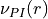
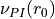
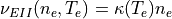
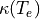
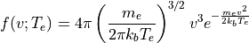
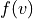
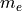
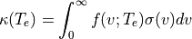
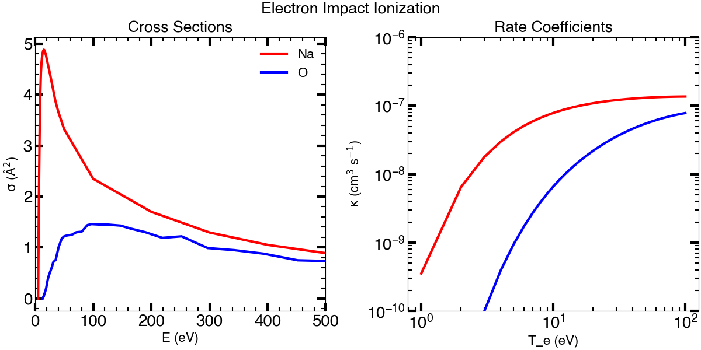

Atomic Data¶
Atom¶
The Atom class is intended to store all the atomic data for different species
used in NEXOCLOM2. This includes the specific neutral species being simulated,
but also magnetosopheric ions that ionize and induce emissions in the neutral
species. Currently, relevant g-values, electron impact excitation rate
coefficients, and electron impact ionization rate coefficients are available
through the Atom class.
Note
Charge exchange coefficients have not yet been included.
Note
The Atom class cannot currently handle molecular species.
Ionization¶
Photoionization¶
Loss due to ionization is customized in the input file with the lossinfo
object. Three loss mechanisms can be specified: a constant lifetime,
photoinization, and electron impact ionization (currently only implemented
at Jupiter). Charge exchange will be added in the future. All three mechanisms
can be included. The rates of each included mechanism are summed.
The photoionization rate, , is a function of distance
 from the Sun according to
from the Sun according to

where  is the photoioniation rate at the reference point
distance from the Sun  (1 AU in [Huebner2015]). The photoionization
rate is zero when an atom is in the geometric shadow of a planet or moon.
(1 AU in [Huebner2015]). The photoionization
rate is zero when an atom is in the geometric shadow of a planet or moon.
Photoionization and photodissocation rates are taken from [Huebner2015], although see the caveats in [Killen2018] regarding the Na photoionzaion rate. Atomic species with photoionization rates available are H, He, C, N, O, N, Mg, S, Cl, K, and Ca. Molecular species with photoionization and or photodissociation rates included are H2, CH4, NH3, OH, H2O, N2, O2 , CO2 , and SO2 , although as noted above, the Atom class cannot currently handle molecular species.
Electron Impact Ionization¶
The electron impact ionization rate,  is a function
of electron density () and temperature (
is a function
of electron density () and temperature ( ):
):

where  is the electron impact ionization rate coefficient.
In general, electron impact ionization cross sections are reported, not the rate coefficients. The rate coefficient as function of electron temperature is found by convolving the ionization cross sections over the electron speed distribution function, assumed here to be thermal (Maxwellian flux):

where  is the probability of an electron having speed
:math`v`,  is the electron mass, :math`k_b` is
Boltzmann’s constant, and is the electron temperature.
The rate coefficient is given by:

The integral is computed numerically for a range of electron temperatures.
Electron impact ionization cross sections and rate coefficients for Na and O are taken from [Johnston1995] and [Johnson2005], respectively, and shown in Figure X.
Charge Exchange¶
Charge exchange between ions and neutral atoms has not yet been implemented.
Routines¶
This is an incomplete list of classes and functions available in the atomic data module. It is limited to the routines a user might need or want to use, excluding more behind the scenes classes. The API reference includes all classes and functions.
|
Class containing all useful atomic data for a neutral or ionic species. |
|
Class to compute g-values and radiation acceleration |
Huebner and Mukherjee, Photoionization and photodissociation rates in solar and blackbody radiation fields, Planetary and Space Science, 106, 11-45, 2015, 10.1016/j.pss.2014.11.022